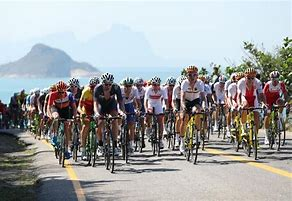

El ciclismo en los Juegos Olímpicos se realiza desde la primera edición (Atenas 1896). Hasta Moscú 1980 solo podían participar hombres, tanto en pruebas de ruta como de pista; en Los Ángeles 1984 se disputó por primera vez la prueba de ruta femenina, en Seúl 1988 compitieron por primera vez mujeres en una prueba de pista. En Atlanta 1996 se añadió al programa la disciplina de ciclismo de montaña (con la prueba de campo a través) y, finalmente, en Pekín 2008 hizo su aparición la disciplina de BMX. Tras el Campeonato Mundial, es la máxima competición internacional de ciclismo. Es organizado por el Comité Olímpico Internacional (COI), junto con la Unión Ciclista Internacional (UCI)
Núm. Año Sede Instalaciones I 1896 Atenas (Bandera de Grecia Grecia) Atenas–Maratón (ruta) Velódromo de Nuevo Fáliro (pista) II 1900 París (Bandera de Francia Francia) Velódromo de Vincennes (pista) III 1904 San Luis (Bandera de Estados Unidos Estados Unidos) Francis Field (pista) IV 1908 Londres (Bandera de Reino Unido Reino Unido) Estadio de White City (pista) V 1912 Estocolmo (Flag of Sweden.svg Suecia) Lago Mälar (ruta) VI 1920 Amberes (Flag of Belgium (civil).svg Bélgica) Merksem–Lier–Amberes (ruta) Velódrome de Amberes Zuremborg (pista) VII 1924 París (Bandera de Francia Francia) Estadio Olímpico de Colombes–Pontoise–La Feuillie (ruta) Velódromo de Vincennes (pista) VIII 1928
Ámsterdam (Flag of the Netherlands.svg Países Bajos) Ámsterdam–Scheveningen (ruta) Estadio Olímpico (pista) IX 1932 Los Ángeles (Bandera de Estados Unidos Estados Unidos) Roosevelt Highway (ruta) Estadio Rose Bowl (pista) X 1936 Berlín (Bandera de Alemania Alemania) AVUS–distrito de Spandau (ruta) Estadio del Berlin Sport-Club (pista) XI 1948 Londres (Bandera de Reino Unido Reino Unido) Windsor Great Park (ruta) Velódromo Herne Hill (pista) XII 1952 Helsinki (Flag of Finland.svg Finlandia) Circuito en Käpylä (ruta) Velódromo de Helsinki (pista) XIII 1956 Melbourne (Bandera de Australia Australia) Circuito en Broadmeadows (ruta) Velódromo Olímpico (pista) XIV 1960 Roma (Flag of Italy.svg Italia) Circuito de Grottarossa y Vía Cristoforo Colombo (ruta) Velódromo Olímpico (pista) XV 1964 Tokio (Bandera de Japón Japón) Circuito en Hachioji (ruta) Velódromo de Hachioji (pista) XVI 1968 Ciudad de México (Flag of Mexico.svg México)

Circuito en Ciudad Satélite (ruta) Velódromo Olímpico Agustín Melgar (pista) XVII 1972 Múnich (Bandera de Alemania Occidental RFA) Circuitos en Grünwald y en la autovía Múnich-Lindau (ruta) Estadio Olímpico de Ciclismo (pista) XVIII 1976 Montreal (Bandera de Canadá Canadá) Circuito del Mont-Royal y Autoroute 40 (ruta) Velódromo Olímpico (pista) XIX 1980 Moscú (Bandera de la Unión Soviética URSS) Circuito en el distrito de Krylatskoye y Autovía de Bielorrusia (ruta) Velódromo de Krylatskoye (pista) XX 1984 Los Ángeles (Bandera de Estados Unidos Estados Unidos) Mission Viejo y Artesia Freeway (ruta) Velódromo Olímpico de Carson (pista) XXI 1988 Seúl (Bandera de Corea del Sur Corea del Sur) Circuito Ciclista de Tongil-ro (ruta) Velódromo Olímpico (pista) XXII 1992 Barcelona (Bandera de España España) San Sadurní de Noya y Circuito de Cataluña (ruta) Velódromo de Horta (pista) XXIII 1996 Atlanta (Bandera de Estados Unidos Estados Unidos) Circuito en Atlanta y alrededores (ruta) Velódromo del Stone Mountain Park (pista) Georgia International Horse Park (montaña) XXIV 2000 Sídney (Bandera de Australia Australia) Parque Centennial (ruta) Velódromo Dunc Gray (pista) Fairfield City Farm (montaña) XXV 2004 Atenas (Flag of Greece.svg Grecia) Circuito en Atenas y alrededores (ruta) Velódromo Olímpico (pista) Circuito Olímpico de Ciclismo de Montaña de Parnitha (montaña) XXVI 2008 Pekín (Bandera de la República Popular China China) Circuito de la plaza de Yongdingmen al paso Juyong (ruta) Velódromo de Laoshan (pista) Circuito de Laoshan para Bicicleta de Montaña (montaña) Pista de Laoshan para BMX (BMX) XXVII 2012
Londres (Bandera de Reino Unido Reino Unido) Circuitos en Londres y en Richmond upon Thames (ruta) Velódromo de Londres (pista) Hadleigh Farm (montaña) Circuito de BMX del Velopark (BMX) XXVIII 2016 Río de Janeiro (Bandera de Brasil Brasil) Fuerte de Copacabana–Grumari y circuito de Grumari (ruta) Velódromo Olímpico (pista) Parque Olímpico de Ciclismo de Montaña (montaña) Centro Olímpico de BMX (BMX) XXIX 2020 Tokio (Bandera de Japón Japón) Recorrido en las prefecturas de Tokio y Shizuoka y Circuito Internacional de Fuji (ruta) Velódromo de Izu (pista) Centro de Ciclismo de Montaña de Izu (montaña) Parque Deportivo Urbano de Ariake (BMX) XXIX 2024 París (Bandera de Francia Francia) Circuito con salida en el puente de Jena (ruta) Velódromo de Saint-Quentin-en-Yvelines (pista) Colline d'Élancourt (montaña) Estadio de BMX de Saint-Quentin-en-Yvelines y Plaza de la Concordia (BMX)